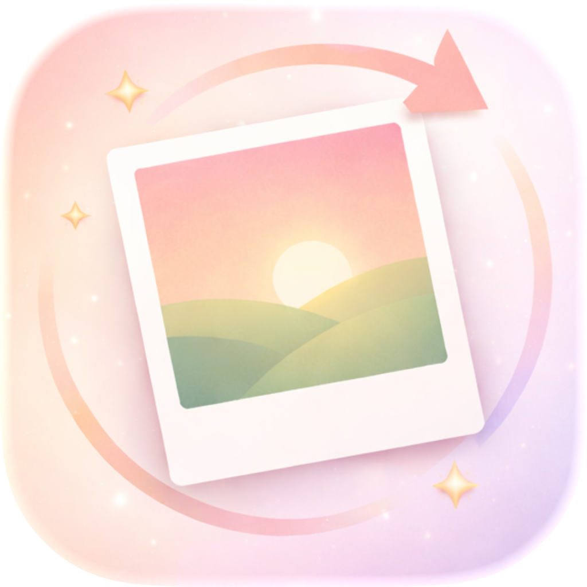
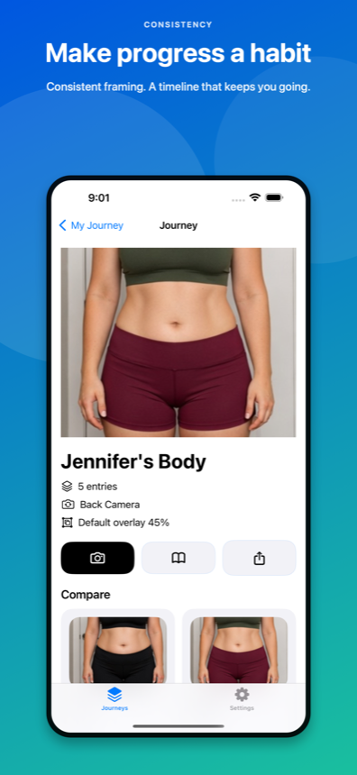
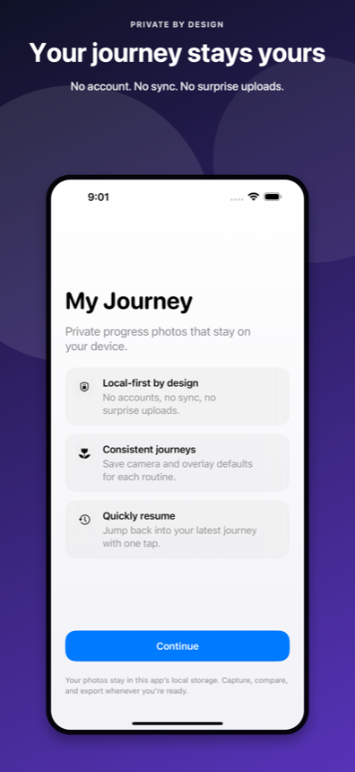

Find your frame.
Use your previous photo as an overlay to line up your next shot. A grid and timer help you keep each photo consistent.

My JourneyProgress can be hard to notice day to day. Capture your journey in photos and see just how far you’ve come.
Download on theApp Store ↗For iPhone and iPad · Open source. Contributions welcome.

Use your previous photo as an overlay to line up your next shot. A grid and timer help you keep each photo consistent.
Keep your photos together in a journey, revisit your timeline, and slide between two moments to see what’s changed.
Turn your progress into a GIF or video, then share it when you’re ready. Your journey photos are stored locally on your device.
Explore a preview of the app, from your first photo to your latest milestone.


My Journey is open source under the MIT License, and everyone is welcome to help. Contribute a bug fix, a feature, an accessibility improvement, design, tests, or documentation.
Get a free lifetime subscription when your pull request is accepted and merged.
You can also help by reporting bugs and sharing ideas. The lifetime subscription reward applies to accepted, merged pull requests.
Give yourself a new way to look back — and keep going.
Download on theApp Store ↗